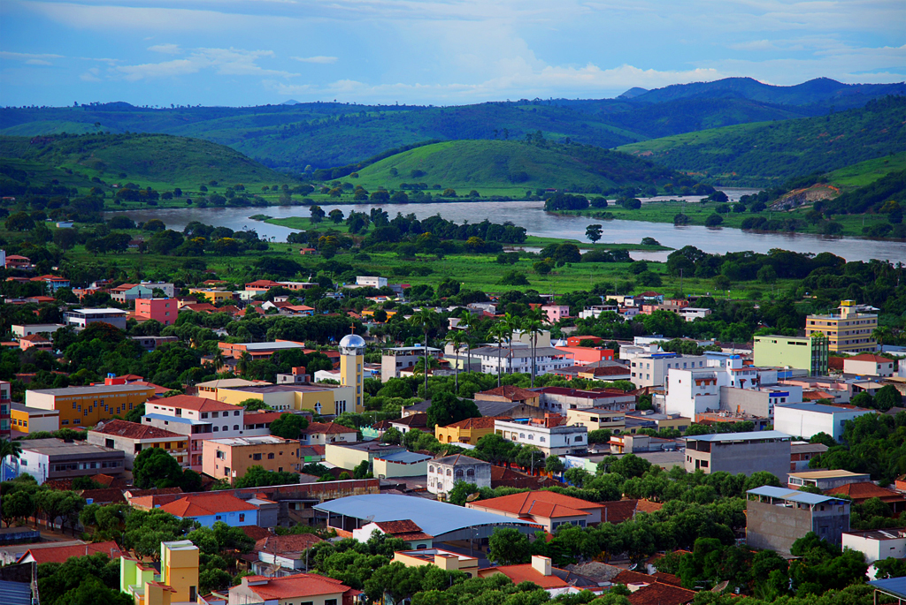

SOBRE CP

Conselheiro Pena é uma pequena cidade localizada no leste de Minas Gerais
pertencente ao Vale do Rio Doce. Fundada em 17 de dezembro de 1938, recebeu este nome
em homenagem a Afonso Pena, advogado e político brasileiro.
Carinhosamente chamada de CP pelo seus habitantes e ex moradores a cidade
possui aproximadamente 23 mil habitantes e 1 483,884 km². CP é caracterizada pelo clima tropical quente semiúmido e pelo relevo montanhoso,
com destaque para o conjunto de cadeia de montanhas chamada
"Bela Adormecida" que se tornou um ponto turístico muito visitado.
Outro importante ponto turístico situado no município é Parque Estadual de Sete Salões,
uma das principais áreas de preservação ambiental da cidade e um dos maiores remanescente de
Mata Atlântica do Vale do Rio Doce.
A agropecuária e a extração de minério são
responsáveis por boa parte da economia do Município. A agricultura tornou-se a principal
fonte de renda local, com destaque às culturas do arroz, feijão, milho e, mais tarde, café, e pouco tempo depois,
foram descobertas jazidas de pedras semipreciosas. A cidade possui uma
cooperativa que fabrica e exporta produtos laticínios para todo país. Possui também uma
fábrica de café e realiza todas as sextas a Feira dos produtores rurais.
O município faz parte da microregião
de Governador Valadares e além do Distrito-sede, é formado pelos distritos: Barra do Cuieté, Bueno, Cuieté Velho,
Ferruginha e Penha do Norte. O Rio Doce é o principal rio que passa por Conselheiro Pena, porém o município
é banhado por vários pequenos rios e córregos que fazem parte da Bacia do Rio Doce, entre eles o Rio Caratinga,
o Córrego Vala Rufins, o Rio João Pinto e o Ribeirão Itatiaia.
NOTÍCIAS
26/04/2021 - CONSELHEIRO PENA DEIXA A “ONDA ROXA”!
Para conter a evolução da pandemia e restabelecer a capacidade de assistência médica da macrorregião,
preservando a rede hospitalar o Governo de Minas decretou continuação da Onda Roxa. A Prefeitura de Conselheiro
Pena aderiu ao decreto até dia 25 de abril. O governo de Minas anunciou que a partir de sábado (24), os municípios que compõe a macrorregiões Leste
poderão sair da onda roxa e avançar para a onda vermelha. Ela faz parte das 13 que estarão fora da fase mais restritivas do plano Minas Consciente.
A decisão foi tomada na quinta-feira (22) durante a reunião do Comitê Extraordinário Covid-19 do Estado de Minas,
grupo que se reúne semanalmente para avaliar a situação da pandemia no estado. No dia 24 a prefeitura de Conselheiro Pena por meio de
suas páginas eletrônicas anunciou do Decreto 2564, informando que o município voltou para Onda Vermelha e normas complementares
ao plano Minas Consciente. Pelo Decreto o comércio poderá funcionar regurlamente inclusive bares e restaurantes que na Onda
Roxa funcionava apenas por delivery. O uso de Máscara continua obrigatório assim como distanciamento social e
disponibilidade de álcool gel em todos os estabelecimentos. O governo estadual ainda não liberou o retorno as aulas
na modalidade presencial, dessa forma, o município segue com o ensino remoto.
22/04/2021 - HOMEM É PRESO COM DROGAS E UMA ESPIMGARDA!
Um homem foi preso no bairro Benevides, na manhã de 22/04, suspeito de tráfico de drogas e posse ilegal de arma de fogo.
A Polícia Militar fazia uma batida policial no bairro, quando abordaram o sujeito, encontrando com ele 02 buchas de maconha.
Na casa dele, os militares também encontraram uma espingarda calibre 22, carregada com um cartucho.
O homem foi preso em flagrante e encaminhado com os materiais à Delegacia de Polícia.
20/04/2021 - ALUNOS RECEBEM KIT ESCOLAR!
A Prefeitura de Conselheiro Pena, através da Secretaria Municipal de Educação, realizou a entrega de 1800 Kits escolares contendo garrafas squeeze, máscaras e o
de Ensino Tutorado para início do ano letivo, pois devido ao COVID-19, as aulas acontecerão de forma remota.
20/04/2021 - CAMPANHA DE VACINAÇÃO CONTRA A GRIPE!
A vacinação contra a gripe em Conselheiro pena começou no dia 12/04. Se você faz parte dos públicos prioritários,
procure um posto de saúde e leve a caderneta de vacinação ou documento com foto. Os grupos que serão vacinados nesta primeira fase até 10/05 são: gestantes, crianças de 6
meses a menores de 6 anos, puérperas (mulheres até 45 dias, após o parto), trabalhadores da saúde e povos indígenas.
14/04/2021 - PONTE QUE LIGA BARRA DO CUIETÉ À TUMIRITINGA ESTÁ SENDO CONTRUÍDA!
Após anos de espera, a construção da ponte sobre o Rio Caratinga no distrito de Barra do Cuieté, que interliga os municípios
de Conselheiro Pena e Tumiritinga está se tornando realidade. Em março/2021 iniciou a implantação do canteiro de obras, em um espaço cedido pela
Prefeitura de Conselheiro Pena, onde já é possível perceber no local guindaste descarregando
os materiais necessários para a execução e toda preparação necessária para as máquinas entrarem
em ação dando início a obrA. A Vale está investindo cerca de R$ 26.000.000,00 (Vinte e Seis Milhões de Reais) neste projeto,
que tem previsão de conclusão para novembro/dezembro/2021.
29/03/2021 - VACINAÇÃO CONTRA COVID-19 DE 65 A 69 ANOS!
A Prefeitura de Conselheiro Pena, por meio da Secretaria Municipal de Saúde, Informa:
A partir de 30 de março vacinaremos pessoas de 65 a 69 anos nas seguintes condições:
Ser domiciliado, pessoas acamadas ou que moram com uma pessoa acima de 70 anos
(deverá comparecer portando o cartão de vacina do idoso de 70 anos, além de identidade, CPF e se possível cartão de vacina)
Os Postos de Saúde Benevides e Mãos Dadas realizarão a vacinação mediante agendamento.
A vacinação continua sendo realizada na Escola Amado Lima, situada na Rua Cristiano Machado,
369 - das 08h às 10h e 30min. e 13h às 15h.
28/02/2021 - NOVIDADE PARA O TURISMO DE CP: RAMPA DA BELA!
A Prefeitura de Conselheiro Pena através da Secretaria de Cultura, Esporte e Turismo, realizou no sábado (27/02),
testes de voo livre na Rampa da Bela, foi analisado o potencial do município para realização deste esporte e foram
superadas diversas expectativas. A rampa de voo livre na cadeia de montanhas Bela Adormecida será um atrativo turístico para nossa cidade
fomentando a economia, além de estimular os moradores a prática de esportes radicais.